レシピ難易度：★★☆☆☆
SORACOM LTE-M Button Plus と磁石で動くスイッチセンサー(磁気式リードスイッチ)がセットになった「IoT 体験キット ～磁気センサー～」を利用したドアのモニタリングです。SORACOM のサービスを活用してドア開閉の記録から通知までを行います。


本レシピを行うのに必要な時間、概算費用
本レシピは以下の通りです。
- 必要な時間: 約90分
- 概算費用: 約9500円
※ 概算費用: ハードウェアや SORACOM を始めとした各種サービスの概ねの費用 (税や送料などの付帯費用や無料枠適用は考慮しないものとしています)
このコンテンツの進め方
ページの内容を読み、また作業を行ったら右下の［Next］を押して次のステップへ進みます。また、［Back］を使って戻ったり、左のナビゲーションメニューでもページの移動が可能です。
左上の［×］を押してコンテンツを終了することができます。また、ページを開きなおすことで再開できます。ページのアドレスはブラウザの［履歴］メニューを利用してください。
本レシピを行うためには以下のものをご用意ください。
ハードウェア
品名 | 数量 | 価格 | 購入先 | 備考 |
1 | 8,880円 | ソラコム | キットの中には以下のものが含まれています。
| |
パソコン | 1 | ― | ― |
|
※ 金額はレシピ作成時となります。税抜き・送料別です。
その他必要なもの
必要なもの | 費用 | 作成方法など |
SORACOM アカウント | 無料※ |
※ アカウント作成・維持の費用の料金です。
設置に利用したもの
本レシピで設置時に利用した部材です。必須ではありませんがご参考にお使いください。
品名 | 数量 | 備考 |
ビニールタイ | 1 | ケーブルをまとめるのに役立ちます。約400円です。 |
両面テープ | 1 | 磁気センサー等の固定用です。 設置面を傷めて怒られないように配慮できる粘着力のものをご用意ください。 |
SORACOM LTE-M Button は、 SORACOM に登録することで様々なクラウドとの連携が可能となります。そのため、まず SORACOM LTE-M Button がお手元に届いたら、SORACOM へ登録をしましょう。
※ すでに登録済みの場合は次へお進みください。
登録の方法は発注済みの SIM を登録する(JP)をご覧ください。約5分で完了します。
登録が完了すると SORACOM LTE-M Button が SIM 管理の一覧に表示されますので、確認ください。

SORACOM の IoT データ収集・蓄積サービス SORACOM Harvest Data を利用して、データの可視化を簡単に実現してみましょう。
まずはグループの作成と、作成したグループへ SIM を所属させる事から始めます。
SORACOM ユーザーコンソールにログインした後［Menu］>［SIM 管理］とクリックして SIM 管理画面を開きます。

SORACOM Harvest Data でデータの収集を行いたい SIM (SORACOM LTE-M Button) にチェックを付け、［操作］>［所属グループ変更］とクリックします。

「新しい所属グループ」のプルダウンボックスをクリックした後、［新しいグループを作成...］をクリックします。

「グループ作成」のグループ名を入力して［グループ作成］をクリックします。
項目 | 例 | 備考 |
グループ名 |
| 自由に入力可能です。日本語も設定可能です。 |

新しい所属グループが先ほど作成したグループになっていることを確認したら［グループ変更］をクリックします。

自動的に SIM 管理画面に戻ります。
SIM の「グループ」に先ほど作ったグループが設定されていることを確認してください。
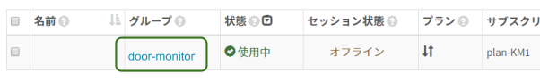
以上で、グループの作成と所属の作業は完了です。
グループに「バイナリ―パーサー機能」「SORACOM Harvest Data」の2つの設定を行います。
SIM 管理画面から、SORACOM LTE-M Button に割り当てたグループ名をクリックします。

［SORACOM Air for Cellular 設定］をクリックして設定ができるように開きます。

「SORACOM Air for Cellular 設定」で以下のように設定します。
項目 | 設定値 | 備考 |
バイナリ―パーサー設定 | ON | スイッチはクリックすることで OFF から ON に切り替えることができます。 |
バイナリ―パーサー設定 / フォーマット |
| 半角英数で入力してください。 |

最後に［保存］をクリックしてください。
同じページの中にある［SORACOM Harvest Data 設定］をクリックして設定ができるように開きます。

「SORACOM Harvest Data 設定」で以下のように設定します。
項目 | 設定値 | 備考 |
（スイッチ） | ON | スイッチはクリックすることで OFF から ON に切り替えることができます。 |

最後に［保存］をクリックしてください。
その後表示される「SORACOM Harvest Data が有効になっています」のダイアログでは［OK］をクリックしてください。
以上で「バイナリ―パーサー機能」SORACOM Harvest Data」の2つの設定が完了しました。
すでに SORACOM LTE-M Button (の SIM)は、このグループに所属しているためこの時点から SORACOM LTE-M Button からのデータが SORACOM Harvest Data に表示されるようになります。
SORACOM LTE-M Button からのデータが SORACOM Harvest Data に表示されることを確認してみましょう。
［Menu］>［SIM 管理］とクリックして SIM 管理画面を開きます。
SORACOM Harvest Data でデータの表示を行いたい SIM (SORACOM LTE-M Button) にチェックを付け、［操作］>［データを確認］とクリックします。

表示された画面で［自動更新］を ON にします。
この表示された画面が SORACOM Harvest Data の画面となります。

SORACOM LTE-M Button を押してデータを確認する
SORACOM LTE-M Button のデータが SORACOM Harvest Data に表示されていることが確認できます。
1件のデータが到着した様子
※ ボタンを「長押し」したため、clickType の値が 3 として表示されています。

データテーブルを表示する
データはグラフだけでは無く、ページの下の方でデータテーブルとして表示されます。ここで具体的な値を確認できます。

以上で全ての作業は終了です。
「接続端子」の使い方
キットに付属の接続端子は、ハンダ付けや圧着チューブ等を利用せずともケーブル同士を簡易的に接続できる端子です。矢印の方向に結線（接続）されており、このモデルは同時に2本のケーブルをつなげることができます。

取り付け方
端子上部を押さえると、穴の中の金属部分が押し下げられてケーブルが押し込めるようになります。上部を押しつつ、穴にケーブルの金属部分を押し込みます。その後、上部を離すと、金属の弾力でケーブルが固定されます。

押し込める長さはおよそ 5~8mm です。取り付けた後、軽く引っ張ってみて取れなければ成功です。（強く引きすぎると抜けてしまうので注意ください。）
ケーブルの取り外しは、取り付けた時と同様に上部を押さえます。ゆるんだタイミングでケーブルを引き抜いてください。
「IoT 体験キット ～ 磁気センサー」に含まれている磁気センサーにについて
キットに含まれている磁気センサーは「センサー部」「磁石部」という2つの部位で構成されています。
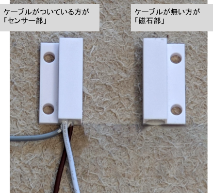
センサー部からは3本のケーブルが出ていますが、このケーブルの組み合わせ方でセンシング可能な内容を「離れた時に "ON"」もしくは「近づいた時に "ON"」と変更できます。
離れた時に "ON" となる組み合わせ
磁気センサー部の「白」と「茶」のケーブルを SORACOM LTE-M Button と接続します。これにより、磁気センサーのセンサー部と磁石部が離れた時にセンサーが "ON" となります。
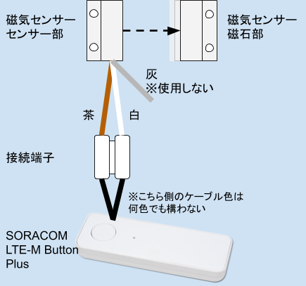
例えば、玄関のような「普段は閉まっているドア」に取り付けておき、「開いたら ON」に利用できます。
近づいた時に "ON" となる組み合わせ
磁気センサー部の「白」と「灰」のケーブルを SORACOM LTE-M Button と接続します。これにより、磁気センサーのセンサー部と磁石部が近づいた時にセンサーが "ON" となります。
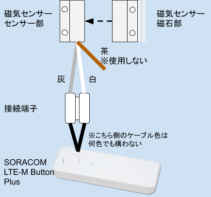
例えば、店舗の入り口のような「普段は開いているドア」に取り付けておき、「閉まったら ON」に利用できます。
センサーの反応距離
センサーの反応距離は約 2cm です。これよりこれより離れると ON 、もしくは、近づくと ON となります。（センサーの個体差があるため、設置前に確認するようにしてください。）

接続の様子
すでに SORACOM LTE-M Button Plus 側の接続が終わった接続端子に、白と茶のケーブルをつなげている様子です。
接続した後は何度かテストを行ってください。
今回は横開きのドアに取り付けました。普段は閉まっていて、開いた時（＝離れた時に ON）にする組み合わせとしました。
SORACOM LTE-M Button Plus の側面に両面テープを貼り、柱に貼り付けてあります。壁紙が若干弱く、両面テープの剥離時に壁面を傷めてしまう恐れがあったため、このような取り付けにしています。
ドアが閉まった状態で近づくようにセンサー部を柱に、磁石部をドア側に貼り付けています。これらも両面テープです。

邪魔なケーブルはいったんビニールタイでまとめています。設置位置が決まったら必要な長さにカットする等しましょう。
動作の様子
開いた直後に SORACOM LTE-M Button Plus の LED の点滅が開始（＝通信開始）していることがわかるかと思います。
実際に動作させてみて SORACOM Harvest Data でデータの受信状況を確認してみてください。
設定と設置が完了したら、蓄積されたデータを SORACOM Lagoon で活用していきます。
SORACOM Lagoon 用語解説
ここで SORACOM Lagoon で使われる用語を解説します。
用語 | 意味 |
プラン | SORACOM Lagoon の契約プランです。機能と料金が異なります。SORACOM Lagoon のご利用料金に機能や料金の比較表があります。 |
メトリクス (メトリック) | データが格納されている先です。SORACOM Lagoon では以下の4つの中から選び、その中からノード(SIMや回線)を選択します。
|
データソース | メトリクスの参照先です。SORACOM Lagoon では "Harvest" (= SORACOM Harvest) を選ぶとメトリクスが展開されます。 Grafana ではテスト用のランダムデータが表示されます。 |
パネル | パネルはデータを表示する領域です。データソースとメトリクスを指定すると、そのメトリクス(たとえばSIM)のデータをパネルで使えるようになります。 様々なパネルが存在します。 |
ダッシュボード | 複数のパネルを束ねて「1枚の画面」にしたものがダッシュボードです。共有の単位となります。 |
SORACOM Lagoon ユーザー (Lagoon ユーザー) | SORACOM Lagoon へログインするためのユーザー(IDとパスワードの組) SORACOM ユーザコンソールへのログインとは異なるユーザ一覧となり、皆さん自身で登録・削除が可能です。ダッシュボードやパネルを編集できる「編集可能」と表示専用の「読み取り」の2段階の権限を設定できます。 作成可能数はプランによります。 |
データリフレッシュ | SORACOM Harvest から SORACOM Lagoon へデータが反映される事、もしくは反映タイミングとなります。反映タイミングはプランによります。 |
アラート | メトリクスのデータに対して条件を設定し、その条件を満たしたら通知を行う仕組みの事です。 |
SORACOM ユーザーコンソールの［Menu］>［データ収集・蓄積・可視化］>［SORACOM Lagoon］とクリックします。

［SORACOM Lagoon の利用を開始する］をクリックします。
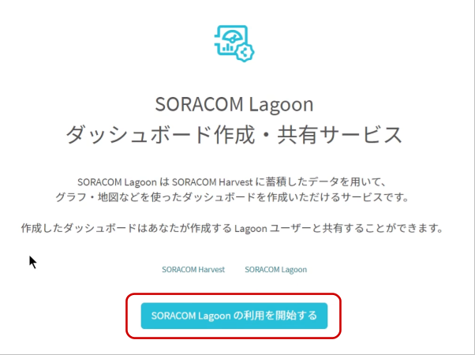
プランのうち［Free］を選択したあと［続行する］をクリックします。
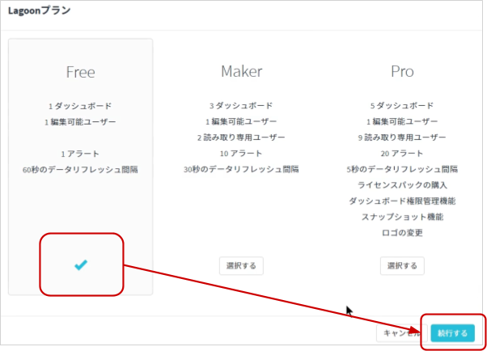
SORACOM Lagoon ユーザーの初期ユーザーに設定するパスワードを入力した後、［利用開始］をクリックします。
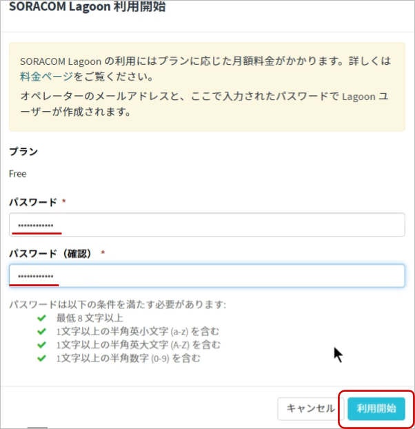
SORACOM Lagoon の有効化に成功すると、以下のように SORACOM Lagoon コンソールへのリンクと、Lagoon ユーザーの一覧が管理できるようになります。
この画面を SORACOM Lagoon 管理画面と呼びます。
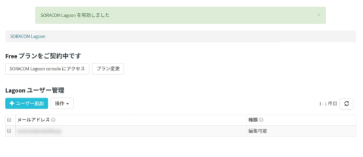
SORACOM Lagoon 管理画面は、SORACOM Lagoon が有効化されている間は ［Menu］>［データ収集・蓄積・可視化］>［SORACOM Lagoon］で表示する事ができます。
SORACOM Lagoon 管理画面を表示したあと、［SORACOM Lagoon console にアクセス］をクリックします。
※ SORACOM Lagoon 管理画面は ［Menu］>［データ収集・蓄積・可視化］>［SORACOM Lagoon］で表示する事ができます。

SORACOM Lagoon へログインします。
メールアドレス (SORACOM ユーザコンソールへログインする際のメールアドレス) と、SORACOM Lagoon 初期ユーザ作成時に利用したパスワードでログインします。

ログインに成功すると、以下のような画面が表示されます。これが SORACOM Lagoon ログイン直後の画面です。ここから「ダッシュボード」や「パネル」を作成していきます。
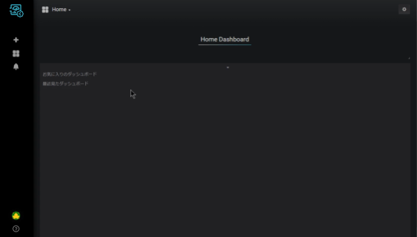
アラート作成アイコン にカーソルを乗せると表示される「作成」メニューから［通知チャンネル］をクリックし、その後表示される［チャンネルを追加］をクリックします。
にカーソルを乗せると表示される「作成」メニューから［通知チャンネル］をクリックし、その後表示される［チャンネルを追加］をクリックします。
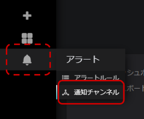
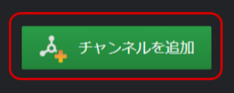
「新しい通知チャンネルを追加」では、以下のように設定します。
項目 | 設定値 | 備考 |
名前 |
| 任意の名前が利用できます。 |
タイプ | Email となっていれば次に進みます。 | |
Email addresses | （通知の送信先 Email アドレス） | 通知の送信先アドレスを指定します。 |
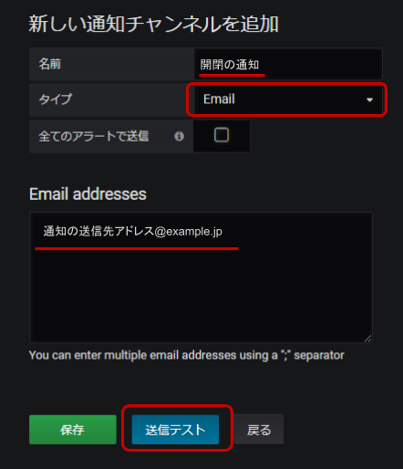
ここまで入力が終わったら［送信テスト］をクリックします。「Email addresses」に記載したアドレスへ、以下のようなメールが届いていることを確認します。
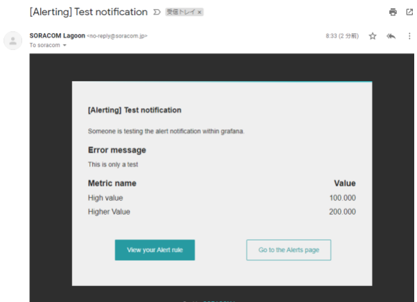
テストの結果が良好であれば、SORACOM Lagoon の画面に戻り［保存］をクリックします。
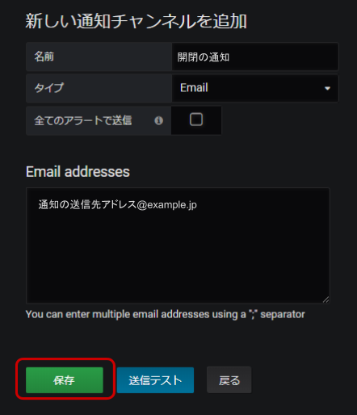
作成アイコン にカーソルを乗せると表示される「作成」メニューから［ダッシュボード］をクリックします。
にカーソルを乗せると表示される「作成」メニューから［ダッシュボード］をクリックします。
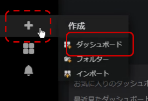
［Graph］ をクリックします。

"Panel Title" >［編集］をクリックします。

"メトリック" タブでノード(= SIM) をクリックし、SORACOM LTE-M Button Plus に紐づいている SIM を選びます。
データソースは "default" に、メトリクスは "Air" になっているので、あとはノード(= SIM) を選びます。
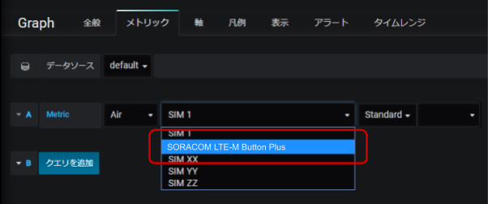
選んだ時点で、全データが表示されます。
表示データを "clickType" のみにします。
データの項目リストをクリックして "clickType" をクリックします。

選ぶと、即時グラフに反映されます。
右上の保存ボタン をクリックし、表示されたダイアログでダッシュボード名を入力した上で［保存］をクリックします。
をクリックし、表示されたダイアログでダッシュボード名を入力した上で［保存］をクリックします。
項目 | 設定値 | 備考 |
名前 |
| 任意の名前が利用できます。 |
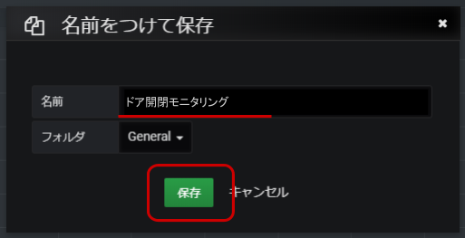
ダッシュボードに戻るので、再度 "Panel Title" >［編集］をクリックします。
"アラート" タブをクリックした後、［アラートの作成］をクリックします。
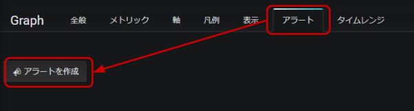
「アラート設定」を以下の通りに設定します。
項目 | 設定値 | 備考 |
名前 |
| 任意の名前が利用できます。 |
評価間隔 |
| 閾値の監視間隔です。 |
条件 (WHEN) |
| "avg()" をクリックすると一覧に現れます。 |
条件 (OF) |
| "5m" をクリックすると一覧が現れますが、 |
条件 (IS ABOVE) |
| "IS ABOVE" はそれ自体の条件の "IS BELOW" |
データが無いか全ての値が Null の時 |
| 評価間隔内でデータが無い、即ちボタンの動作が |
実行エラーまたはタイムアウトの時 |
| 何らかの理由で評価に失敗した時の設定です。 |
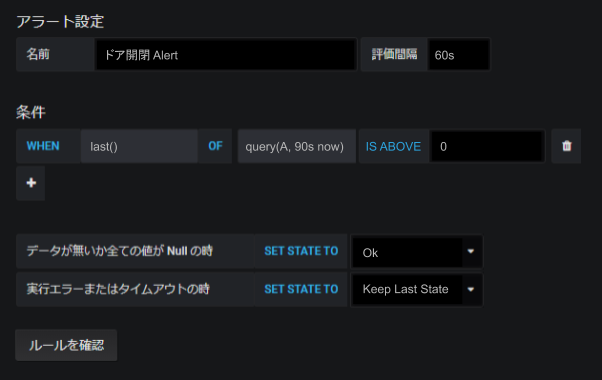
ここまで入力が完了できたら［ルールを確認］をクリックします。この時点でボタンからのデータが過去90秒以内に発生していなければ firing: false 即ち、アラートは発生せず、正常な設定となります。
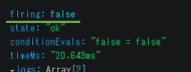
次に、ボタンを押してデータを発生させます。30秒～60秒経過した後に、再度［ルールを確認］をクリックすると firing: true 即ち、アラートが発生した状態となります。（この時点では通知の送信先を設定していないため、アラート発生の有無を確認するのみとなります。）
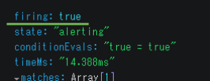
そこから30秒～60秒経過した後に、再度［ルールを確認］をクリックすると firing: false に戻ることが確認できるでしょう。
［ルールを確認］ボタンは何度でも押すことが可能ですので、何度か試してみることをお勧めいたします。
［通知］をクリックした後、 "送り先" の追加 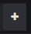 をクリックします。一覧の中から通知チャンネルで作成した通知先をクリックします。
本レシピでは "開閉の通知" という名称で作ったので、それをクリックします。
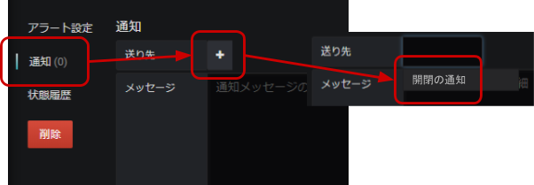
"メッセージ" にアラート発生時のメッセージを入力します。
ここでは扉が開いた時に反応するように SORACOM LTE-M Button Plus を構成しているため、その旨を入力しています。

右上の保存ボタンをクリックし、［保存］をクリックします。
以上で全ての設定が終了しました。画面右上のダッシュボードに戻る ボタンをクリックし、ダッシュボードに戻ります。
ボタンをクリックし、ダッシュボードに戻ります。
実際にドアを開閉して通知が来るか試してみましょう。以下のようなメールが届きます。
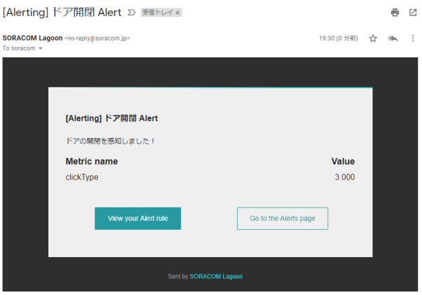
また、最初の通知が届いてから約30～60秒で本文に「[OK]」が入ったメールが届きます。
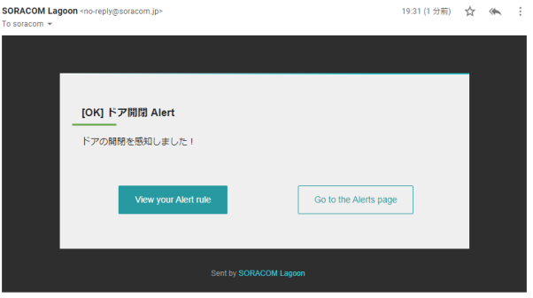
これは "データが無いか全ての値が Null の時" で設定した "Ok" になります。ドアの開閉に伴った通知では無く「次回のアラート通知の準備が整った」状態という意味です。
このメールが来る前にドアの開閉が発生しても、新たな通知は来ないようになっています。これは、頻繁な通知による「通知爆弾」を避けるための仕組みです。
頻度を上げたい場合は、SORACOM Lagoon の有料プランをご検討ください。
本レシピでは費用がかかるサービスを利用しています。
本項をよく読み、必要な操作や解除作業を行うようにして、想定外の費用が掛からないようにしてください。
費用について
ここで記載している金額は全て税別、送料別となります。
SORACOM LTE-M Button
ご利用にあたっては本体の価格とは別に、内蔵されている SIM (plan-KM1) の基本料金(月額100円)と、データ通信量に応じたデータ通信料※が発生します。
plan-KM1 の料金はご利用料金 - 特定地域向け IoT SIM (plan-KM1) をご確認ください。
※ 目安として、1送信あたり約 0.25 ~ 0.3 円程度
SORACOM Harvest Data を始めとした SORACOM プラットフォーム利用料は後述の通りかかります。
SORACOM プラットフォームの利用料金
サービス／機能 | 料金 |
本機能を有効にしたグループに所属する1SIMあたり5円/日 (2000リクエスト/日/SIMを含む) 2000リクエスト/日を超えた分は0.004円/リクエスト | |
本レシピでは Free プラン(無料)を使用しました。その他の有料プランで出来るようになること等は SORACOM Lagoon 利用料金のページをご覧ください。 |
※ 費用詳細はリンク先をご確認ください。
グループ解除
SORACOM Harvest Data 等、「機能が有効になっているグループに所属している SIM × 費用」となっているサービスにおいては、「機能を OFF にする」することで費用の発生を抑えることができます。またもう1つの方法として「グループに所属している SIM の数を減らす(= 解除する)」事でも費用を抑える事ができます。
グループ解除の方法はグループからの解除 (JP)をご覧ください。
SORACOM Harvest Data のデータ削除
SORACOM Harvest Data は基本的にはデータ保管料は無料※です。そのため、保存しておいても害はありませんが、デモ等で利用する際にはデータを綺麗にしておく必要が出てくるため、データ削除について解説します。
※発生から40日を超えたデータは削除されます。40日以上データを保管したい場合はデータ保持期間延長オプション利用料金をご利用ください。
SORACOM Harvest Data 画面 (［操作］>［データを確認］) のデータテーブルで、削除したいデータのチェックボックスを付けた後に［削除］をクリックします。表示されたダイアログで改めて［削除］をクリックすると、削除されます。
※ 複数のデータにチェックをつければ一括で削除可能です。

データの復元はできませんのでご注意ください。
SORACOM Lagoon の解約
SORACOM Lagoon はオンラインで解約が可能です。 Free プランであれば有効化しておいても費用は発生しませんが、長期に渡って利用しない場合には解約も選択いただけます。
解約の方法はSORACOM Lagoon の解約(JP)をご覧ください。
本レシピでは、SORACOM LTE-M Button Plus と磁気センサーを利用したドアの開閉をセンシングしました。
磁気センサーはドアの開閉のみならず、幅広い活用方法が考えられます。
- トイレやお風呂等の生活で利用するドアに取り付けて、遠く離れた家族の見守り
- ガレージや窓に取り付けて、家庭やオフィスの入退出記録
- 冷蔵庫やワインセラーに取り付けて、扉の閉め忘れ防止
- キャビネットに取り付けて、重要書類へのアクセス記録
- リモコン等「いつも元に戻しておいてもらいたいもの」に取り付けて、物品の取出し記録・戻し忘れ対策
また、SORACOM LTE-M Button Plus の接点 I/F には、磁気センサー以外にも以下のようなセンサーを取り付けることが可能です。
- 傾斜スイッチ
- マイクロスイッチ
- キーロックスイッチ
接続の方法などは 半田ごて不要！SORACOM LTE-M Button Plus とセンサーを繋げてみよう をご覧ください。
活用事例集
様々な活用事例がまとまっています
最新LPWA通信規格 "LTE-M" 搭載ボタンで何つくる？〜次々に身近なユースケースが生まれる理由〜
外部のクラウドと連携する方法
本レシピでは SORACOM Harvest Data や SORACOM Lagoon の連携までとなりましたが、他の SORACOM サービスの利用で AWS (Amazon Web Services) を始めとしたクラウドや SaaS との連携が可能となります。
具体的な方法はSORACOM LTE-M Button を様々なクラウドや SaaS で活用するアーキテクチャー例をご覧ください。